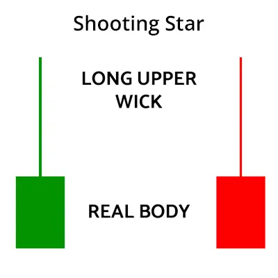
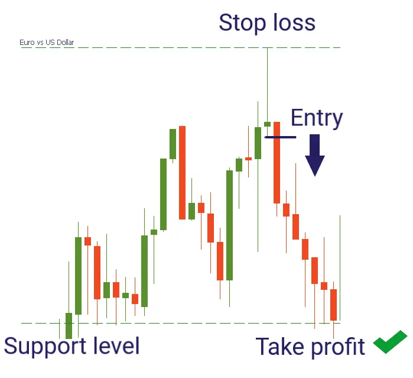

A shooting star is a type of candlestick pattern that forms when the price of the security opens, rises significantly, but then closes near the open price.
The distance between the highest price of the day and the opening price should be more than twice as large as the shooting star’s body.
It occurs at the end of the uptrend and signals a bearish reversal.
| Formation of Shooting Star |
Here is the formation of shooting star candlestick pattern:
| What does Shooting Star tells you? |
Shooting stars signals a potential downside reversal and is most effective when it forms after 2-3 consecutive rising candles having higher highs.
A shooting star opens and rises strongly during the trading session, showing the same buying pressure that is seen over the last trading sessions.
At the end of the trading session, the sellers push the price down near the open.
Learn to trade better with candlesticks in just 2 hours by Market Experts
This shows that the buyers have lost control by the end of the day, and the sellers have taken over.
The long upper shadow indicates that the buyers are losing position as the price drops back to the open.
The candle after the shooting star gaps down and then moves lower on heavy volume.
This candle helps in confirming the price reversal and indicates that the price will continue to fall.
| Trading Example: |
Before trading with the shooting star, one should remember the following points:
Below is an example of the shooting star candlestick pattern in the daily chart of Nifty. We can see how the shooting star is formed after a strong uptrend and signals a bearish reversal.
| Limitations of Shooting Star: |
One should not only rely on a candle pattern like in a shooting star for making trading decisions.
This is why confirmation is required, one can confirm by the next day candle or other technical analysis indicators.
One should also use stop losses when using candlesticks to control the losses.
A candlestick pattern is more significant when it occurs near an important level signaled by other forms of technical analysis.
